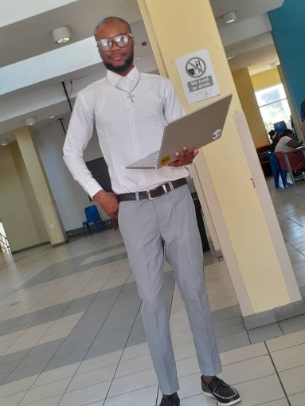
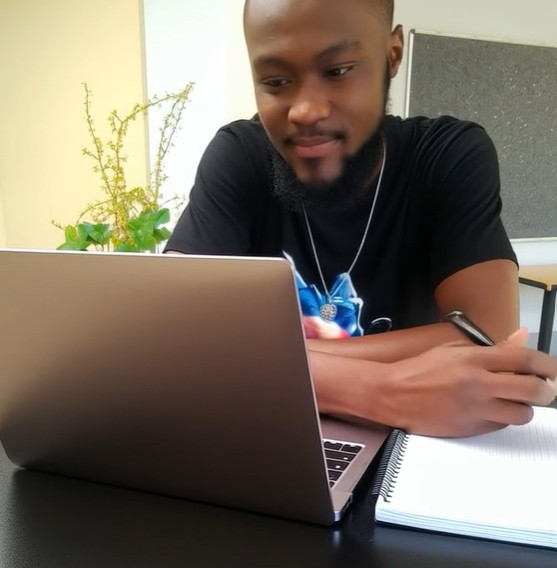

Founder & CEO, Ezitech042
Software engineering student and growing full-stack developer building practical digital solutions that solve real problems.

Still growing, still learning, still building
https://www.linkedin.com/in/tukwasichukwuobi-okorie-983955325/I work with HTML, CSS, and JavaScript, focusing on creating clean, responsive, and user-friendly web applications. My approach is simple, I like things that work well, look good, and make sense to the user without unnecessary complexity.
I am the founder and CEO of Ezitech042, a tech-driven brand focused on digital solutions and everyday technology services. Through this, I work on projects ranging from web development to software installation, device support, and tech-related services.
Beyond just coding, I'm deeply interested in building systems that improve discipline, productivity, and real-life habits. I believe technology should not just exist, it should actually help people live better.
Projects Built
Years Learning
Dedication

My academic and professional learning journey
Started my academic journey with a diploma program in Maritime studies, building foundational knowledge before transitioning into technology.
Currently studying Computer Science, gaining strong theoretical and practical knowledge in software engineering, algorithms, and system design.
Intensive hands-on training in modern web development, focusing on HTML, CSS, JavaScript, and full-stack technologies to build real world projects.
Technologies and services I work with
Building responsive, clean websites with HTML, CSS, and JavaScript
Continuously learning backend technologies and modern frameworks
Software installation, device support, and everyday tech services
Creating tools that solve personal and community challenges
What I'm working on right now
Expanding beyond frontend into complete application development
Turning ideas into functional products that people can use
Creating tools that address real needs in my environment
Growing the brand into a recognized tech solution provider
Open to collaborations, freelance opportunities, and growth